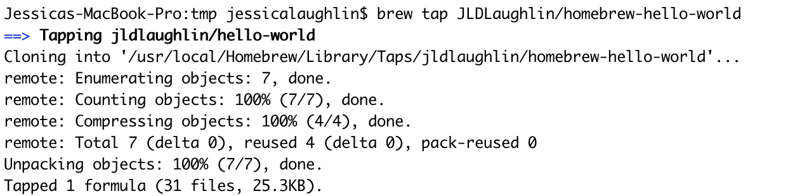
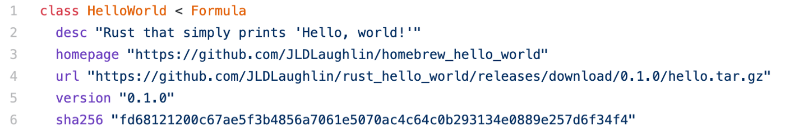
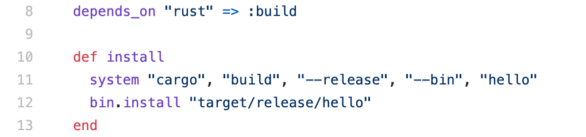
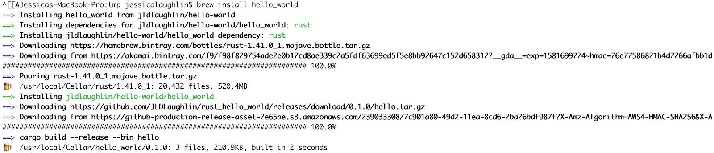
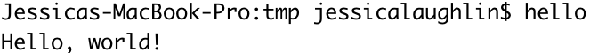

How does Homebrew work? Starring Rust!
Recently at Materialize, I created our first (and my first!) Homebrew package. My helpful coworkers pointed me to documentation about how to write a Homebrew Formula, but the guides I found online didn’t explain how installing software with Homebrew worked. In this post, I’m going to explain how Homebrew works by walking through a tiny example: brew installing a Rust program that simply prints “Hello, world!”.
I’ve already created a “Hello, world!” program in Rust using Cargo, Rust’s package manager, and pushed it to a new GitHub repository. (For the curious, this is the Rust program created by default when you create a new Cargo package).
To run this program locally on my computer, I ran the following two commands from my terminal:
In short: to run my Rust program, Cargo translated my source code into an executable file stored at a predictable location and then later handed that executable to my computer’s processor to run.
Now that we understand how our computers execute our Rust program, we actually understand how Homebrew works, too! Just like cargo build && cargo run creates a binary, stores it in a predictable location, and executes it, Homebrew creates executables and installs them into a predictable location for your computer to execute later. To take a closer look, let’s install our “Hello, world!” package!
By default, Homebrew can only install core Homebrew Formulae. To install our third-party “Hello, world!” package, we will first need to run brew tap. Tap-ing the Github repository with our Homebrew Formula creates a shallow clone of our repo in our Homebrew taps directory, allowing us to install, update, and track our package just like the canonical Homebrew packages.
Note: If you’re creating your own Homebrew Formula at home, you may see weird failures (like `git: “credential-osxkeychain” is not a git command`) at this step. Often, the trick is your Github repository must be named exactly `homebrew-*`.
Once we’ve tap-ed the repository with our Formula, running brew install hello_world from our terminal will install our package. But what does brew install actually do?
When we run brew install, Homebrew reads our package’s Formula — an implementation of Ruby’s abstract Formula class that provides package metadata and installation instructions — to create an executable from our source code and install it locally on our computer. Let’s dig into this by looking at the Formula for `hello_world`, section by section:
This first section defines essential metadata for our Homebrew Formula:
Now that we’ve provided Homebrew with our package’s metadata, in the next section we tell Homebrew how to actually build it:
And that’s (most of) our Formula! Since we’ve provided the necessary metadata and installation instructions for Homebrew, we can now run brew install hello_world in our terminal:
We can see Homebrew is following our Formula by: downloading and installing our dependency (Rust), downloading our source code (hello.tar.gz), and running cargo build —- release —- bin hello to compile our code and put our binary in /usr/local/bin.
Note: Homebrew installs packages into /usr/local/bin because this directory location is already on your Mac’s PATH — this means you can execute the newly created binary by name without providing an explicit path to it!
Just like cargo build created an executable from our Rust code and put the binary in a predictable location, brew install created an executable from our Formula and placed it on our Mac’s PATH. Just like cargo run executed the binary in /target, invoking hello directly in our terminal will execute the binary installed on our PATH:
